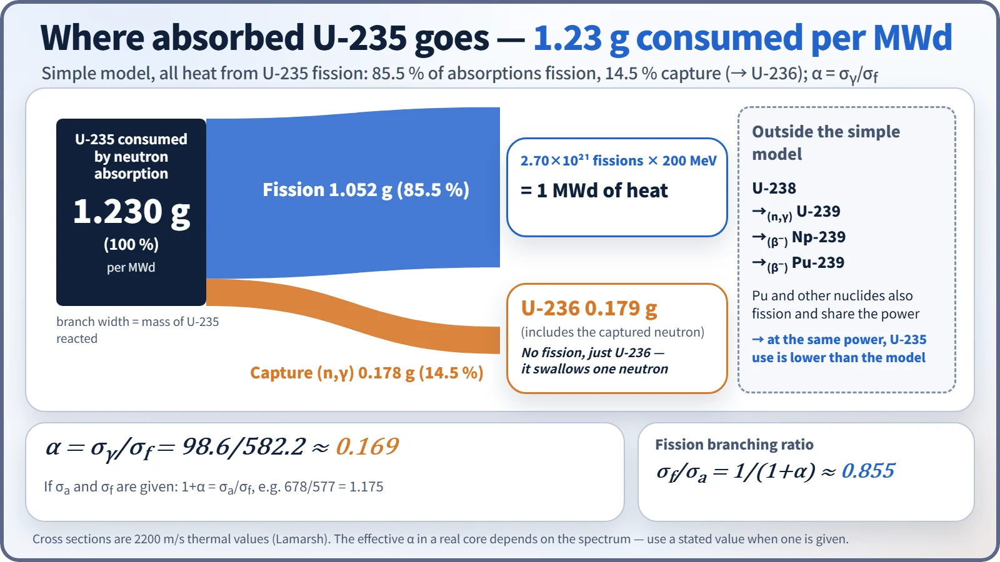
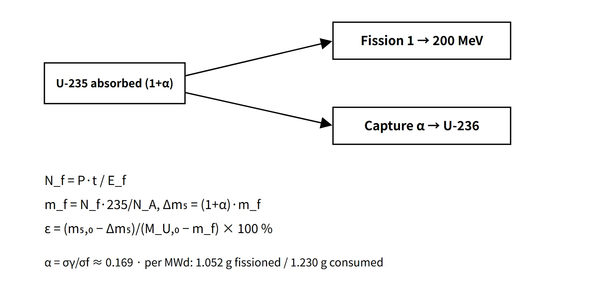

Fuel & Materials · C-FM-007
U-235 Consumption and Enrichment Change — Fissions, Capture (α) and Remaining Enrichment in One Calculation
From thermal power to fissions, from fissions to U-235 consumed with capture, and from there to the remaining enrichment, with every exam result worked out.
U-235 consumption is the amount of U-235 lost by neutron absorption, the sum of fissions and radiative captures: consumption = fissioned amount × (1 + α), with α = σγ/σf ≈ 0.169; the enrichment after burnup is the remaining U-235 mass divided by the remaining U mass.
Principle and mechanism
Starting point — from thermal power to fission rate
- The recoverable energy per fission is Ef ≈ 200 MeV = 3.204×10⁻¹¹ J.
- Fission rate Rf = P / Ef → 1 W ≈ 3.12×10¹⁰ fissions/s. If a problem gives a "conversion factor C = 3.1×10¹⁰ fissions/W·s", use that value as is (about 201 MeV per fission).
- 1 MWd = 8.64×10¹⁰ J ≈ 2.70×10²¹ fissions → mass of U-235 fissioned = 2.70×10²¹ × 235.04 / 6.022×10²³ ≈ 1.05 g/MWd.
This note carries the same constants (200 MeV, 1.05 g/MWd, 0.8815) throughout.
Absorption = fission + capture
Not every thermal neutron absorbed by U-235 causes fission. Some are radiative captures (n,γ) that produce U-236, which does not fission with thermal neutrons and acts only as a parasitic absorber.
| Quantity | Definition | 2200 m/s value (textbook) |
|---|---|---|
| α | σγ / σf | 98.6 / 582.2 = 0.169 |
| Fission probability per absorption | σf / σa = 1/(1+α) | 0.855 |
| η | ν / (1+α) | 2.43 / 1.169 = 2.08 |
So per MWd, consumption = 1.052 × 1.169 ≈ 1.23 g, and the 0.178 g captured becomes 0.179 g of U-236 (heavier by the neutron mass). Radiative capture also releases gamma energy, but it is small compared with fission energy and already partly included in Ef (200 MeV). If a problem gives σa and σf, use 1+α = σa/σf (2019: 678/577 = 1.175).

How enrichment falls
The calculation has three steps.
- Nf = Pth·t / Ef (number of fissions; Pth is thermal power, t = capacity factor × operating days)
- mf = Nf × 235/NA, Δm₅ = (1+α)·mf (without α, Δm₅ = mf)
- ε = (m₅,₀ − Δm₅) / (MU,0 − mf) × 100 % — the denominator is the remaining U, i.e. the initial U minus only the fissioned mass (captured U-235 stays as U-236, so it is not subtracted)
Example — 2026 exam, session 4, Q5: 100 t of 3 % UO₂, 4,000 MWt, 90 % capacity factor, 300 days.
- MU = 100 × 0.8815 = 88.15 tU; initial U-235 = 2,644 kg
- Energy released 1.08×10⁶ MWd → burnup 12,252 MWd/tU
- U-235 fissioned = 1.08×10⁶ × 1.052 g = 1,137 kg
- Remaining 1,508 kg ÷ (88,147 − 1,137) kg = 1.73 %
- Including capture with α = 0.169: consumption 1,329 kg, enrichment 1.51 %
In this simple model 3 % fuel runs out of U-235 at about 28.5 GWd/tU counting fission only, or about 24.4 GWd/tU including capture. Real PWR fuel, however, burns much longer, because other nuclides such as Pu-239 bred from U-238 capture also contribute to fission (the Pu share is around half at end of cycle); fuel with an initial 3.2 % discharged at about 33 GWd/tU is known to retain roughly 0.8–1 % U-235 (an approximate value common in the literature).
![Graph of U-235 enrichment from 0 to 3.5 wt% against burnup from 0 to 35 GWd/tU with two calculated straight-ish lines from 3 %: fission only at 1.05 g/MWd reaching zero at 28.5 GWd/tU and with capture at 1.23 g/MWd reaching zero at 24.4 GWd/tU; exam points at 12.3 GWd/tU giving 1.72 to 1.73 % (2020, 2026) and at 18.5 GWd/tU giving 0.74 % (2019, with capture), a marker for real discharged fuel of initial 3.2 % at about 33 GWd/tU retaining 0.8 to 1 %, and a card with the three calculation steps and the 2026 example of 1,137 kg fissioned and about 1.73 %](../../assets/images/concepts/c-fm-007-u235-depletion/fig1-enrichment-vs-burnup.webp)
What it means in a plant
- Core design: cycle length is set by the balance between the fissile inventory and the build-up of poisons. When choosing the initial enrichment and loading, U-235 depletion and Pu production are tracked with depletion codes.
- Reactivity management: U-235 depletion and the build-up of U-236 and fission products reduce the excess reactivity, which PWRs compensate by lowering the boron concentration. The parasitic absorption of U-236 is a reactivity penalty when reprocessed uranium is reused.
- Kinetics: as the Pu-239 share grows toward end of life, βeff decreases.
- Nuclear material accountancy: the U-235 and Pu inventories of spent fuel are calculated with depletion codes and used for accountancy and safeguards declarations.
- Reactor types in South Korea (examples): fresh OPR1000 and APR1400 fuel is low-enriched below 5 wt% (example), while CANDU uses natural U (0.711 %) and has a low discharge burnup of about 7 GWd/tU (example).
Regulatory basis
| Basis | Key point |
|---|---|
| 10 CFR 50.68(b)(7) | Nominal enrichment of fresh fuel assemblies 5.0 wt% U-235 or less (condition for the 50.68 criticality alternative). Higher enrichment needs an exemption — 2023 exemption for 6 wt% lead test assemblies at Vogtle Unit 2 |
| RG 1.183 Rev. 1 (2023) | Extends the applicability of accident source-term release fractions to 8 wt% enrichment and a rod-average 68 GWd/MTU |
| Low-enriched uranium (LEU) | Less than 20 % U-235 |
| NSSC notices, e.g. on preparing accountancy regulations for specified nuclear materials | Accountancy of inventories and changes of specified nuclear materials, national inspection, IAEA safeguards |
The calculation principle is the same for the 81st exam (2007) and the 2019–2026 questions. A current answer can add one line on the 5 wt% enrichment limit and the move toward LEU+ (5–10 %).
Easily confused pairs
| Fissioned amount | Consumption (absorption) | Depletion | Enrichment | |
|---|---|---|---|---|
| Definition | U-235 that fissioned | Fission + capture | Process of enrichment falling with burnup | Raising the U-235 fraction by isotope separation |
| Per MWd | 1.05 g | 1.23 g (α 0.169) | — | — |
| Basis of calculation | P·t / Ef | × (1+α) | ε = remaining U-235 / remaining U | Mass balance and SWU |
| Common mistake | Confusing it with consumption | Omitting α (about 15 % too low) | Not converting UO₂ to U | Confusing it with depletion |
Not converting UO₂ to U changes the result considerably: under the 2019 conditions the answer is 0.74 % with the conversion and 1.01 % without it.
Key points at a glance
- Definition: U-235 consumption = neutron absorptions = fissions + radiative captures (→ U-236).
- Fission rate: Rf = P/Ef; 1 W ≈ 3.1×10¹⁰ fissions/s; 1 MWd ≈ 2.7×10²¹ fissions.
- Fissioned amount: 1 MWd ≈ 1.05 g of U-235 (fissioning all of 1 g ≈ 5.12×10²³ MeV ≈ 0.95 MWd).
- α: σγ/σf ≈ 0.169 → consumption = fissions × 1.169 ≈ 1.23 g/MWd.
- U-236: fissioned amount × α ≈ 0.18 g/MWd, a parasitic absorber.
- Enrichment: ε = (m₅,₀ − Δm₅)/(MU,0 − mf) × 100 %, with MU,0 = MUO₂ × 0.8815.
- Example: 3 % UO₂ 100 t, 1.08×10⁶ MWd → 1,137 kg fissioned, 1.73 %.
- Limits: ignoring Pu-239 and U-238 fast fission → the real decrease is slower; precise values need depletion calculations.
- Regulation: 5 wt% limit for fresh fuel (10 CFR 50.68), inventory calculation for accountancy.

This is a model answer, not an official solution. It reflects the criteria current as of 2026.
Exam relevance
The calculation has appeared five times in the Korean Professional Engineer (Nuclear Power) exam: 81st exam, session 2, Q4 (fission rate and U-235 consumption rate); 2019 exam, session 2, Q1 (U-235 consumption and enrichment with burnup); 2020 exam, session 3, Q6 and 2026 exam, session 4, Q5 (burnup, U-235 consumption and enrichment); and 2024 exam, session 3, Q4 (U-235 fission energy and consumption). The answers, at 200 MeV per fission:
- 81st exam: 1,000 MWt → 2.70×10²⁴ fissions/day, 1.05 kg/day fissioned, 1.23 kg/day consumed
- 2024: 1 g → 5.12×10²³ MeV; 3,000 MWt → about 3.16 kg fissioned per day
- 2019: 4,667 MWt, 1.63×10⁶ MWd (thermal), 11,760 GWh (electric), 1,707 kg fissioned, 2,006 kg consumed, 300 kg of U-236, 0.74 %
- 2020: 12,354 MWd/tU, 917 kg, 1.72 % (with capture 1,072 kg, 1.50 %)
- 2026: 12,252 MWd/tU, 1,137 kg, 1.73 % (with capture 1,329 kg, 1.51 %)
The 2020 and 2026 questions did not give α, so answer with "consumption = fissioned amount" and add the value including capture alongside. Always check whether the loading is given as U or as UO₂.